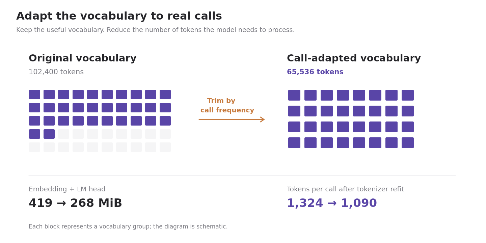
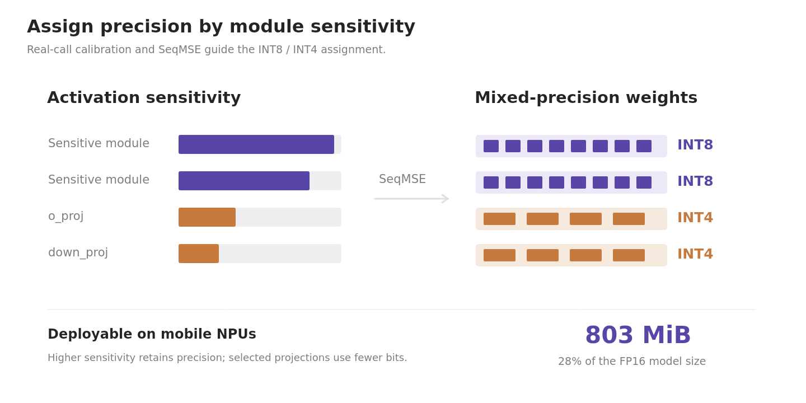

We bring ixi-sLM, a 1.2B Korean small language model, to mobile NPUs to power AI Call Summary and AI Call Answering. Call-domain vocabulary and tokenizer adaptation, together with task-aware mixed-precision quantization, produce an 803 MiB model. The paper reports approximately 94% of a cloud LLM’s task-weighted quality and NPU execution at 23% of the CPU’s per-call energy.
A single domain-adapted model serves two ixi-O functions. AI Call Summary produces summaries, keywords, and suggested tasks after a call. AI Call Answering identifies the caller and their purpose when the user is unavailable, and streams that context in real time.
An AI call agent needs to handle private conversations, respond during a live call, and fit alongside the operating system and other apps. Moving the language model onto the phone makes inference independent of a network connection and avoids a cloud request for every interaction. But a model that works in the cloud does not automatically fit these conditions.
We present ixi-sLM, a 1.2B Korean small language model based on EXAONE 4.0 1.2B. It powers two production services in ixi-O through one shared base model, with a task configuration for each service. Our approach adapts both the language representation and the numerical representation of the model to actual call traffic.
The model combines domain-adaptive modeling—vocabulary trimming and tokenizer refitting—with task-aware quantization. The resulting 803 MiB model deploys on Qualcomm and Apple NPUs. This work is a collaboration between LG Uplus and OptAI Inc.
Background: What Makes an On-Device Call Agent Hard?
A production call service faces several constraints at once. Memory is shared with the rest of the phone, call-time responses cannot wait indefinitely, and sustained computation must stay within the device’s thermal limits. Mobile NPUs also require execution choices to be fixed when the model is exported.
The input itself introduces another challenge. Korean speech-to-text transcripts contain disfluencies and language patterns that differ from general pretraining text. An unchanged tokenizer can turn this traffic into unnecessarily long sequences, increasing both memory use and inference work.
C1Memory. Approximately 1 GiB available to the service.
C2Latency and thermals. Responsive inference within a shared thermal budget.
C4Input distribution. Korean call transcripts rather than general written text.
C5Quality. Direct comparison with cloud-based services.
Our Method: On-Device Modeling
We treat tokenization and precision as parts of model development. The service’s input distribution determines which vocabulary is worth keeping, which call phrases should take fewer tokens, and which modules need more numerical precision.
1. Adapt the Vocabulary and Tokenizer to Calls
We trim the vocabulary using call-frequency statistics, reducing it from 102,400 to 65,536 tokens. This is especially useful because the embedding and language-model head occupy a large fraction of the model after the transformer weights are compressed. Their combined size falls from 419 to 268 MiB, saving 151 MiB.
A tokenizer refit then merges frequent call phrases. Average call-traffic token count falls from 1,324 to 1,090, an approximately 18% reduction. Vocabulary trimming reduces model storage; tokenizer adaptation reduces the amount of text the model has to process.

Domain-adaptive modeling. Less-used vocabulary groups fade while retained groups form a smaller vocabulary. The blocks are schematic; the counts and memory sizes are reported in the paper.
2. Assign Precision According to Activation Sensitivity
Quantization is calibrated on real calls, aligning the calibration data with the service workload. SeqMSE-based analysis identifies modules whose activations are more sensitive to reduced precision.
More sensitive modules retain INT8 weights. Selected lower-sensitivity projections, including o_proj and down_proj, use INT4. This mixed-precision assignment carries service quality onto the NPU with only a marginal drop in overall score, while producing the 803 MiB deployed model.

Task-aware mixed precision. Calibration and sensitivity analysis guide per-module weight precision. The bar lengths illustrate relative sensitivity, not measured values.
Opt.Studio applies the service-specific optimization recipe and prepares the adapted model for Qualcomm and Apple deployment paths. Hardware-specific conversion and compilation follow the modeling stage, allowing the same approach to support both mobile platforms.
Domain adaptation→Task-aware quantization→Hardware-specific export→Qualcomm NPU Apple NPU
Results: Quality, Size, and On-Device Efficiency
Evaluation uses 100 held-out, de-identified calls. The paper reports approximately 94% of a state-of-the-art cloud LLM’s task-weighted quality across the two services. The table below gives the reported task-level scores.
Task-weighted quality scores
Service
Cloud LLM
ixi-sLM
AI Call Summary
99.60
94.33
AI Call Answering
99.00
95.40
The 803 MiB model occupies 28% of its FP16 size. On the Galaxy S25 Ultra workload, NPU execution reduces per-call processing time from 45 to 10 seconds and per-call energy from 7.79 to 1.79 mAh.
CPU and NPU execution on Galaxy S25 Ultra
Measurement
CPU
NPU (ours)
Processing time per call
45 s
10 s 22% of CPU
Energy per call
7.79 mAh
1.79 mAh 23% of CPU
During a 300-second sustained run, the tested NPU path stays below 35°C in surface temperature, while CPU execution approaches 45°C. These measurements reflect the devices and workloads evaluated in the paper.
From a Small Model to a Production Service
Shipping an on-device language model requires aligning model design with the service that uses it. In ixi-sLM, Korean call traffic informs the vocabulary, tokenizer, calibration data, and precision assignment. Together, these choices allow one compact model to support both post-call understanding and live call answering.
For evaluation details, deployment settings, and ablations, please see the full paper.
Citation
BIBTEX
@misc{lee2026ixislm,
title = {ixi-sLM: On-Device sLM for AI Call Agent Service},
author = {Lee, Han-Sang and Lee, Kyuho and Park, Juneyoung and
Lee, Seongbae and Park, Jin Kyu and Kim, Minjae and
Hong, Yuri and Lee, Jinwoo and Kwon, Youngwook and
Kim, Seongwan and Hyeon, Seungheon and Lee, Jaeho and
Kwon, Kiduk},
year = {2026},
note = {NeurIPS 2026 Workshop on On-Device Intelligence}
}